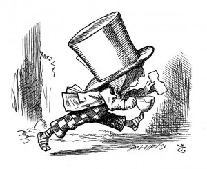

newspapers, at the end of trials, "There was some attempts at applause, which was immediately suppressed by the officers of the court," and I never understood what it meant till now.'
'If that's all you know about it, you may stand down,' continued the King.
'I can't go no lower,' said the Hatter: 'I'm on the floor, as it is.'
'Then you may SIT down,' the King replied.
Here the other guinea-pig cheered, and was suppressed.
'Come, that finished the guinea-pigs!' thought Alice. 'Now we shall get on better.'
'I'd rather finish my tea,' said the Hatter, with an anxious look at the Queen, who was reading the list of singers.
'You may go,' said the King, and the Hatter hurriedly left the court, without even waiting to put his shoes on.
'--and just take his head off outside,' the Queen added to one of the officers: but the Hatter was out of sight before the officer could get to the door.
'Call the next witness!' said the King.
The next witness was the Duchess's cook. She carried the pepper-box in her hand, and Alice guessed who it was, even before she got into the court, by the way the people near the door began sneezing all at once.
'Give your evidence,' said the King.
'Shan't,' said the cook.
The King looked anxiously at the White Rabbit, who said in a low voice, 'Your Majesty must cross-examine THIS witness.'
'Well, if I must, I must,' the King said, with a melancholy air, and, after folding his arms and frowning at the cook till his eyes were nearly out of sight, he said in a deep voice, 'What are tarts made of?'
'Pepper, mostly,' said the cook.
'Treacle,' said a sleepy voice behind her.